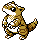

#027
Sandshrew
Ground
Abilities: Sand Veil, Sand Force, Sand Rush
Base stats BST 300
HP50
Attack75
Defense85
Speed40
Sp. Atk20
Sp. Def30
Evolution
dbbw EVOLVE_LEVEL, 22, SANDSLASHLevel-up learnset
LevelMoveType
Lv. 1Defense CurlNormal
Lv. 1ScratchNormal
Lv. 1Sand AttackGround
Lv. 1Poison StingPoison
Lv. 7RolloutRock
Lv. 9BulldozeGround
Lv. 11Rapid SpinNormal
Lv. 13Fury CutterBug
Lv. 14MagnitudeGround
Lv. 15SwiftNormal
Lv. 21Fury SwipesNormal
Lv. 24SlashNormal
Lv. 24Night SlashDark
Lv. 27DigGround
Lv. 27AgilityPsychic
Lv. 30Gyro BallSteel
Lv. 33Poison JabPoison
Lv. 36EarthquakeGround
Lv. 39Swords DanceNormal
Lv. 42SandstormRock
Lv. 45FissureGround